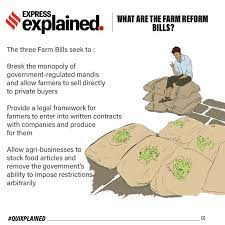

Three Agricultural Law's
Government Introduce's New Laws

These Act Areas Are :
1. Farmers' Produce Trade and Commerce (Promotion and Facilitation) Act: expands the scope of trade areas of farmers produce from select areas to "any place of production, collection, and aggregation." Allows electronic trading and e-commerce of scheduled farmers' produce. Prohibits state governments from levying any market fee, cess or levy on farmers, traders, and electronic trading platforms for a trade of farmers' produce conducted in an 'outside trade area'.
2. Farmers (Empowerment and Protection) Agreement on Price Assurance and Farm Services Act: creates a framework for contract farming through an agreement between a farmer and a buyer before the production or rearing of any farm produces. It provides for a three-level dispute settlement mechanism: the conciliation board, Sub-Divisional Magistrate, and Appellate Authority.'
3. Essential Commodities (Amendment) Act: allows for the center to regulate certain food items in the course of extraordinary situations like war or famine. Requires that imposition of any stock limit on agricultural produce be based on price rise.
Academics
Agricultural economist Ashok Gulati has been vocal in his support for the bills and contends that the bills are bold steps in the right direction. The Chief Economist of the International Monetary Fund, Gita Gopinath, said the "farm bills and labour bills are very important steps in the right direction. They have the potential to have more labour market flexibility, providing greater social security to workers and more formalisation of the labour market. In the case of agriculture, having a much more integrated market, creating competition, having farmers getting a greater share of the price that finally the retail price that's paid. So that helps with rural incomes". She also stressed that the implementation of it must be right. Milind Sathye, a professor at the University of Canberra asserts that the new laws will "enable farmers to act together and join hands with the private sector and that the previous system had led to growing farm debt and farmers suicides, among other problems". Rajshri Jayaraman, Associate Economics Professor at the University of Toronto, states that "the bills are confusing and to pass legislation like this affects the largest single sector of the economy and the poorest people in an already poor country during a pandemic."
On 1 January 2021, 866 academicians from across India came out in support of the three farm laws. This includes seven vice-chancellors and academicians from Delhi University, JNU, Rajasthan University, Gujarat University, Allahabad University and Banaras Hindu University among others. Kaushik Basu, former chief economist at the World Bank, supports the cause of the peasants, against the position of Arvind Panagariya, former Chief Economist at the Asian Development Bank. Hansong Li, a Chinese scholar at Harvard University, argues that although India's farm reforms bear resemblance to China's own market-oriented agricultural reforms, India lacks the risk-mitigation mechanisms in the Chinese context, and that the overall crisis has shown a lack of public trust and cohesion in India.
On 24 April 2021, a number of civil society members urged both sides to end the stalemate.